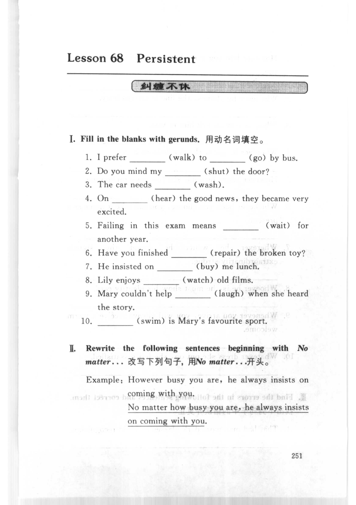
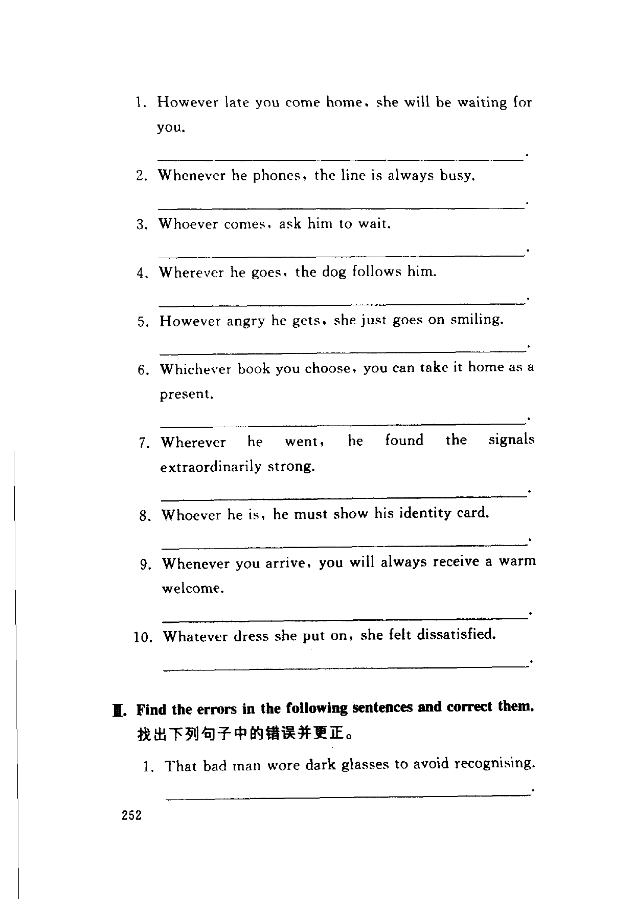
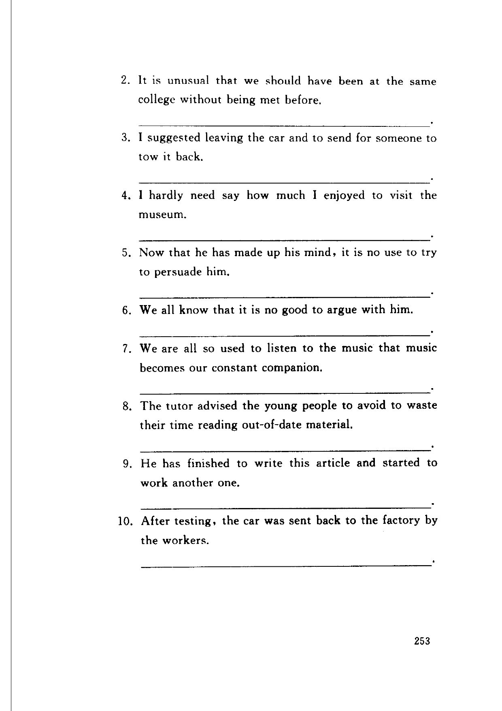

Grammar exercises · 语法练习
I. Fill in the blanks with gerunds.
用动名词填空。
-
I. Gerunds — I prefer
1.(walk) to2.(go) by bus. -
I. Gerunds — Do you mind my
3.(shut) the door? -
I. Gerunds — The car needs
4.(wash). -
I. Gerunds — On
5.(hear) the good news, they became very excited. -
I. Gerunds — Failing in this exam means
6.(wait) for another year. -
I. Gerunds — Have you finished
7.(repair) the broken toy? -
I. Gerunds — He insisted on
8.(buy) me lunch. -
I. Gerunds — Lily enjoys
9.(watch) old films. -
I. Gerunds — Mary couldn't help
10.(laugh) when she heard the story. -
I. Gerunds —
11.(swim) is Mary's favourite sport.
II. Rewrite the following sentences beginning with No matter…
改写下列句子，用No matter…开头。
Example: However busy you are, he always insists on coming with you.
No matter how busy you are, he always insists on coming with you.
-
II. Rewrite with No matter — However late you come home, she will be waiting for you.
-
II. Rewrite with No matter — Whenever he phones, the line is always busy.
-
II. Rewrite with No matter — Whoever comes, ask him to wait.
-
II. Rewrite with No matter — Wherever he goes, the dog follows him.
-
II. Rewrite with No matter — However angry he gets, she just goes on smiling.
-
II. Rewrite with No matter — Whichever book you choose, you can take it home as a present.
-
II. Rewrite with No matter — Wherever he went, he found the signals extraordinarily strong.
-
II. Rewrite with No matter — Whoever he is, he must show his identity card.
-
II. Rewrite with No matter — Whenever you arrive, you will always receive a warm welcome.
-
II. Rewrite with No matter — Whatever dress she put on, she felt dissatisfied.
III. Find the errors in the following sentences and correct them.
找出下列句子中的错误并更正。
-
III. Find and correct the error — That bad man wore dark glasses to avoid recognising.
-
III. Find and correct the error — It is unusual that we should have been at the same college without being met before.
-
III. Find and correct the error — I suggested leaving the car and to send for someone to tow it back.
-
III. Find and correct the error — I hardly need say how much I enjoyed to visit the museum.
-
III. Find and correct the error — Now that he has made up his mind, it is no use to try to persuade him.
-
III. Find and correct the error — We all know that it is no good to argue with him.
-
III. Find and correct the error — We are all so used to listen to the music that music becomes our constant companion.
-
III. Find and correct the error — The tutor advised the young people to avoid to waste their time reading out-of-date material.
-
III. Find and correct the error — He has finished to write this article and started to work another one.
-
III. Find and correct the error — After testing, the car was sent back to the factory by the workers.
Original images · 原图对照
Expand a page to compare it with the transcription. Open the original in a new tab to zoom in.
展开原图核对文字，也可以在新标签页打开原图放大查看。
Book page 251 · Lesson title, Exercise I (fill in the blanks with gerunds, items 1–10), Exercise II introduction (No matter… example)
Open original · 打开原图 ↗ Download original · 下载原图


Book page 252 · Exercise II (rewrite beginning with No matter, items 1–10), Exercise III introduction (find the errors, item 1)
Open original · 打开原图 ↗ Download original · 下载原图


Book page 253 · Exercise III (find the errors and correct, items 2–10)
Open original · 打开原图 ↗ Download original · 下载原图


Your notes and answers
Use this space for longer responses or exercises that do not have an individual answer box.